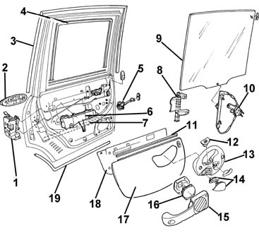

Introduction - PASSENGER COMPARTMENT REAR SIDE DOORS
- Path
- Descriptions > 70 FITTINGS > 7010 PASSENGER COMPARTMENT REAR SIDE DOORS > Introduction - PASSENGER COMPARTMENT REAR SIDE DOORS
- Kind
- system description
- Applies to
- all engines; all production periods
- Interactive page
- https://sloeber94.github.io/elrnDB-fMltpl/en/#/2892459
Applies to: all engines; all production periods
Anti-intrusion bar
Structural strengthening element inserted in the door frame to contain deformations towards the inside of the passenger compartment in the case of side impacts.
Passive safety
This is the collection of measures which interact to reduce the consequences to the occupants of the vehicle after an accident. The following come into this category: the stratified windscreen, the collapsible steering column, the door opening cables, the material from which the steering wheel is made, the absence of dangerous projections and corners in the dashboard, the structure of the pedals, the shape and resistance of the seats, the head restraints, the seat belts (also with pre-tensioners), the air bags and the bodyshell with differentiated resistance, in other words the passenger survival cell which is as rigid as possible and the front and rear sections, on the other hand, with crumple zones designed to gradually absorb the energy of the impact.
The rear doors are similar to the front doors in terms of structure and components.
The structure is reinforced with a longitudinal side impact bar to improve passive safety in the case of a side impact.
The lock mechanism is protected by a shield which hinders forced operation from outside the vehicle.
The window opening device can be operated manually or electrically.

1, Lock 2, Outer handle 3, Upper seal 4, Interior rain gutter 5, Check strap 6, Anti-theft shield 7, Impact bar 8, Window guide 9, Window 10, Window opening device 11, Glass scraper 12, Electric window switch 13, Interior grab handle 14, Ashtray 15, Oddments pocket 16, Speaker 17, Door panel 18, Protective water shield 19, Lower seal